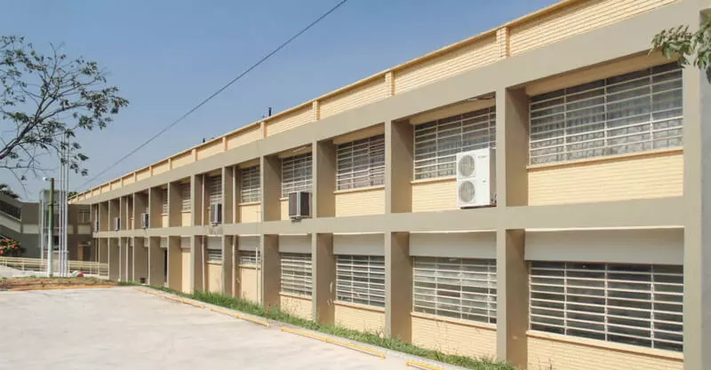

Centro Paula Souza - Fatec Jales
Sobre O Centro Paulo Souza
O Centro Paula Souza é uma autarquia do Governo do Estado de São Paulo, vinculada à Secretaria de Desenvolvimento Econômico, Ciência, Tecnologia e Inovação (SDECTI). A instituição administra 220 Escolas Técnicas Estaduais (Etecs) e 66 Faculdades de Tecnologia (Fatecs), reunindo mais de 283 mil alunos em cursos técnicos de nível médio e superiores tecnológicos, em mais de 300 municípios (CPS, 2015).
Nas Fatecs, mais de 73 mil alunos estão matriculados em 71 cursos de graduação tecnológica, em diversas áreas, como Construção Civil, Mecânica, Informática, Tecnologia da Informação, Turismo, entre outras. Além da graduação, são oferecidos cursos de pós-graduação, atualização tecnológica e extensão (CPS, 2015).
A instituição foi criada pelo decreto-lei de 6 de outubro de 1969, como resultado de um grupo de trabalho para avaliar a viabilidade de implantação gradativa de uma rede de cursos superiores de tecnologia com duração de dois e três anos (CPS, 2015).
A trajetória do Centro Paula Souza vai além de seus 45 anos de fundação. Sua memória mistura-se com a história centenária do ensino profissional público em São Paulo. Em 1969, o órgão nasceu com a missão de organizar os primeiros cursos superiores de tecnologia, mas no decorrer das décadas, acabou englobando também a educação profissional do estado em nível médio, absorvendo unidades já existentes e construindo novas Etecs e Fatecs para expandir o ensino profissional a todas as regiões do Estado (CPS, 2015).